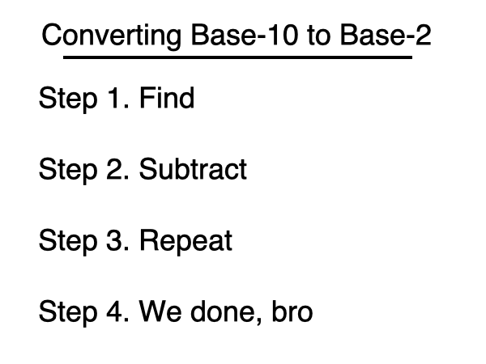
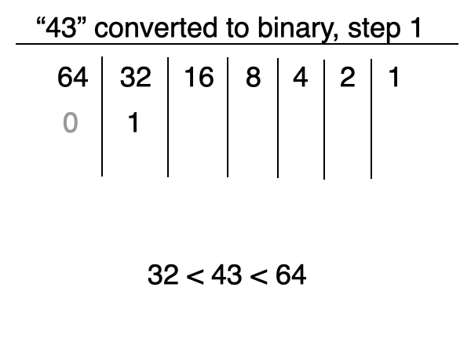
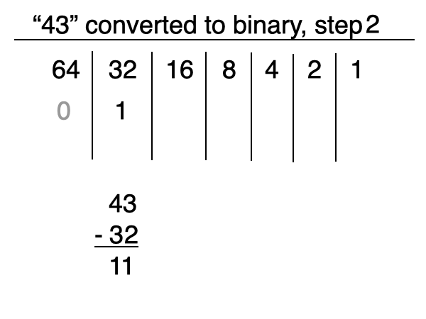
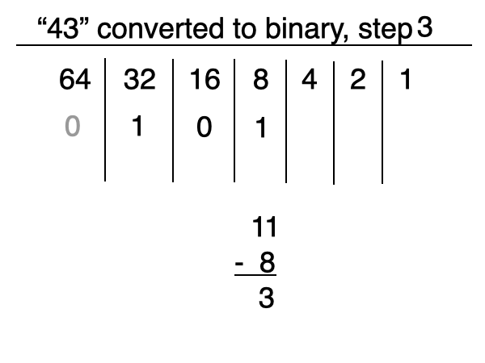
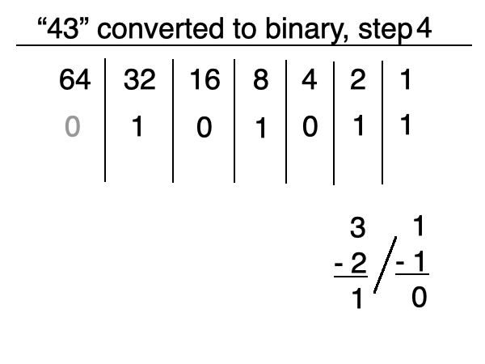
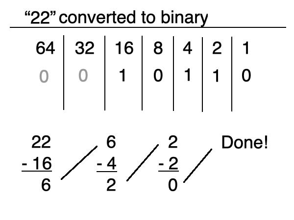

you smart good
Programming Concepts
Converting Base-10 to Binary
Congrats on completing your first review! You're doing great so far!
We spent a while discussing how to read binary and how to convert binary to Base-10, but we haven't really talked about converting Base-10 to binary.
So how do we convert Base-10 numbers to Base-2? We'll break it down into steps and then look at some examples:
Step 1. Find the largest power of 2 that fits into the Base-10 number without going over the Base-10 number. Then, put a 1 into that column.
Step 2. Subtract the value of that power of 2 from the Base-10 number.
Step 3. Repeat this process using the next largest power of 2.
Step 4. Continue until the entire Base-10 number is accounted for.
Now let's use these steps to convert the number 43 to binary.

Step 1. Find the largest power of 2 that fits into the Base-10 number without going over the Base-10 number. Then, put a 1 into that column.
As we now know, the powers of 2 are: 1 (20), 2 (21), 4 (22), 8 (23), 16 (24), 32 (25), 64 (26), 128 (27), 256 (28), and so on.
The largest power of 2 that fits into 43 is 32 (25). The next power of 2 is 64 (26), which is larger than 43, so we won't use that one.
So now we can put a 1 in the 32's column. This means that our binary sequence will be 6 bits.

Step 2. Subtract the value of that power of 2 from the Base-10 number.
In the previous step, we used 25, which is 32. So we will subtract 32 from 43.
Now we have 11 left to work with.

Step 3. Repeat this process using the next largest power of 2.
Now we have a remaining balance of 11.
The next largest power of 2 is 8. So let's repeat the process:
Put a 1 in the 8's column, then subtract 8 from the Base-10 number.
This now leaves a remaining balance of 3.
Note that because we are not using the 16's column, we simply put a 0 in its place.

Step 4. Continue until the entire Base-10 number is accounted for.
Now we are left with the value of 3. Let's follow the same process until the remaining balance is exactly 0.
The next largest power of 2 is 2, so we will put a 1 in the 2's column and subtract 2 from 3, leaving a remaining balance of 1.
The remaining balance is a power of 2 (20), so we can put a 1 in the 1's column.
We now have a remaining balance of 0, which means we're done! We now know that 43 in binary is 1 0 1 0 1 1!

Let's do one more. Let's try the number 22.
The largest power of 2 that fits is 16, so let's put a 1 in the 16's column, and subtract it from 27. We now have a remaining value of 6.
The next largest power of 2 would be 4, so let's following the same process. We have a remaining balance of 2.
2 fits into 21 perfectly, so once we put a 1 into the 2's column, we're done!
We now know that 22 in binary is 1 0 1 1 0!
